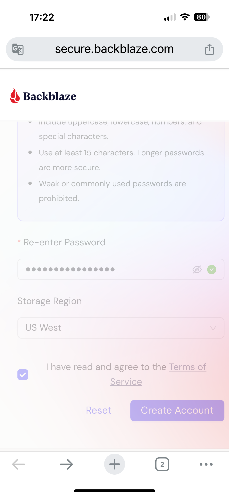
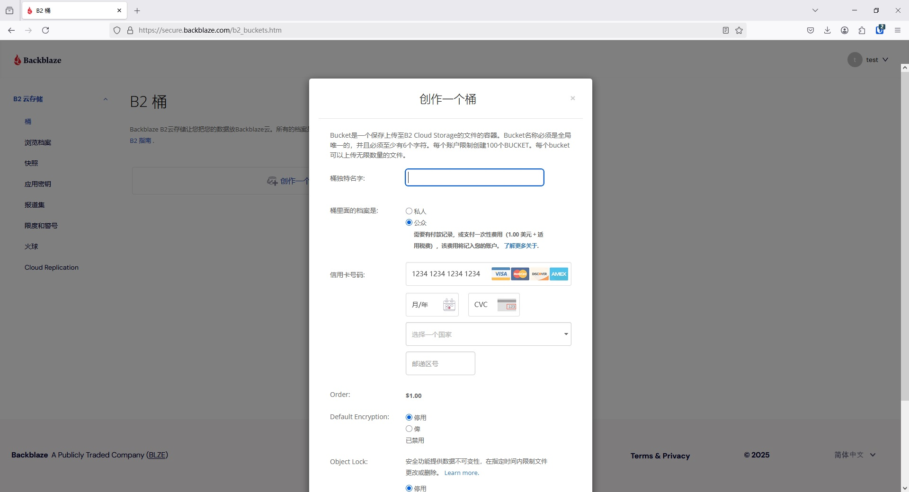
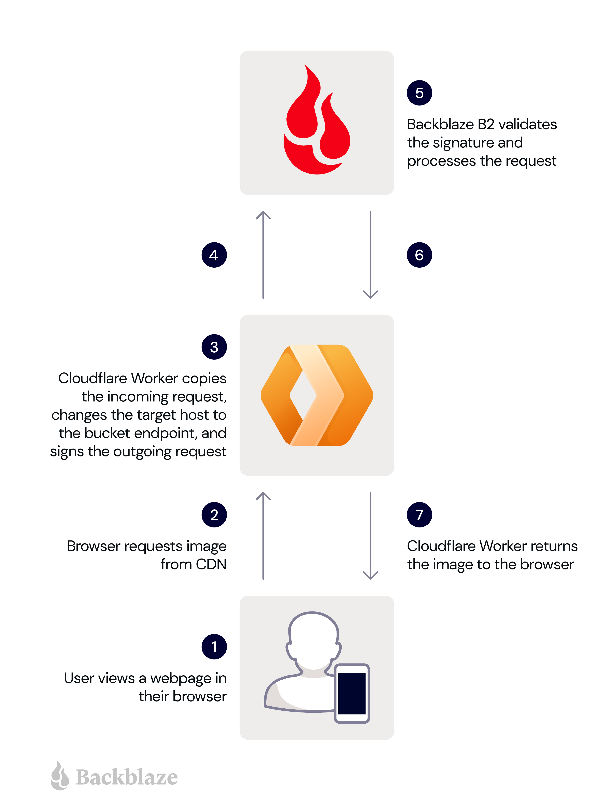
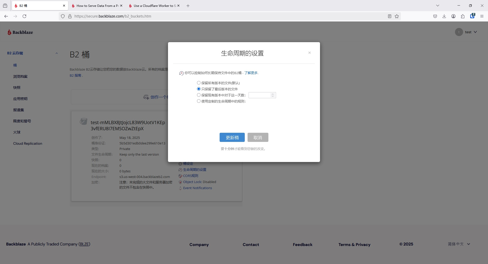
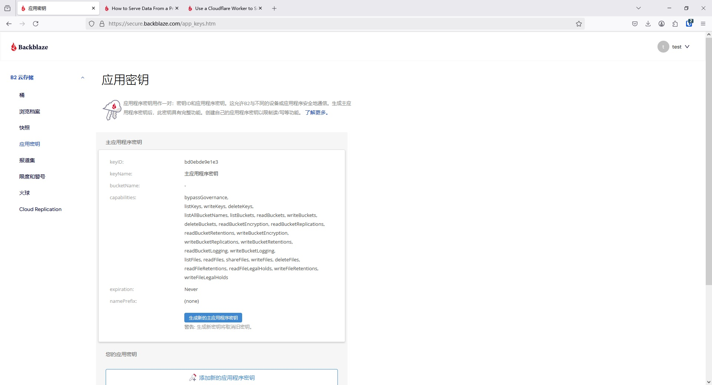
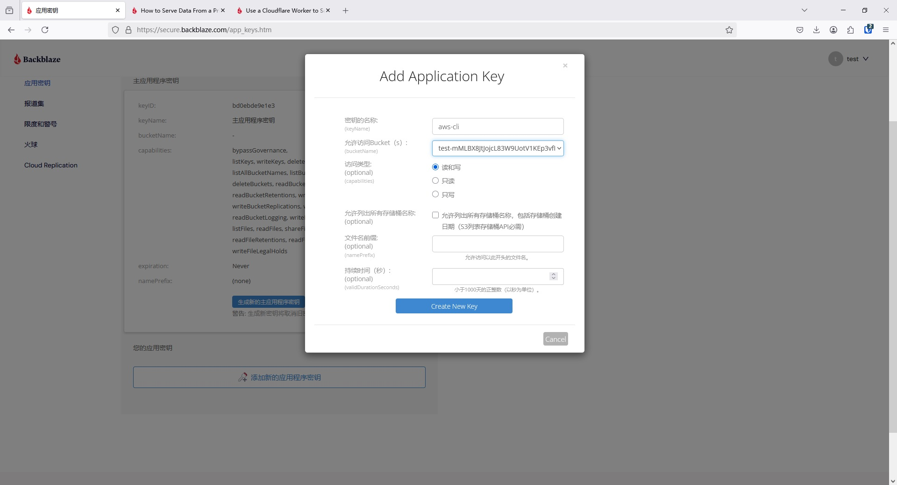
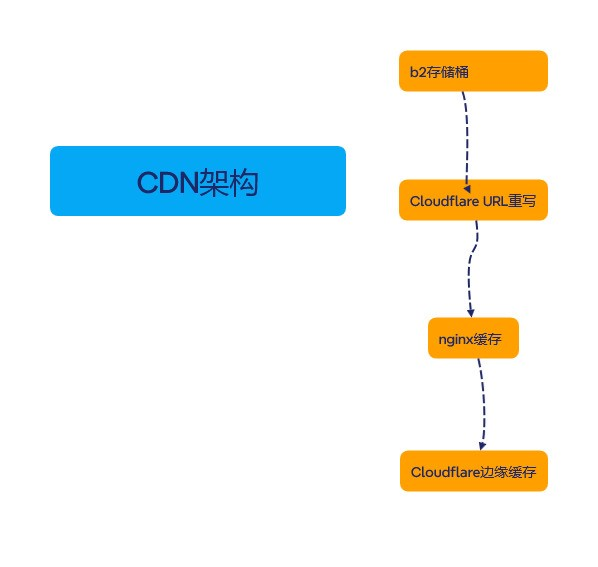
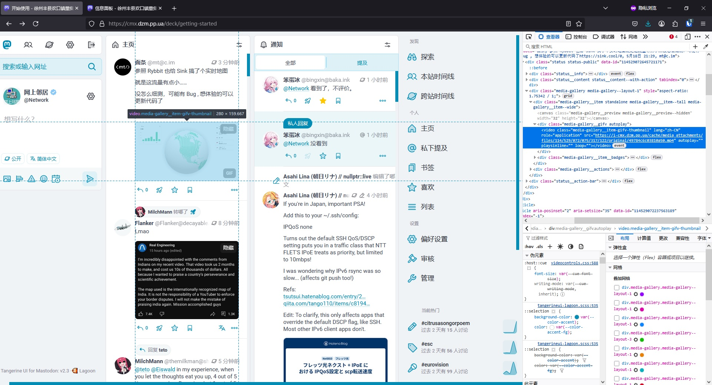
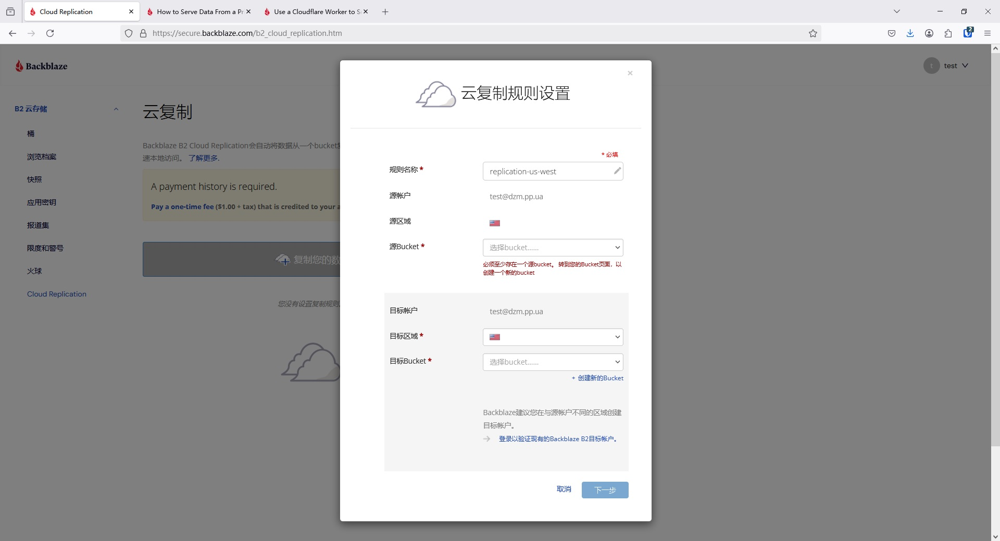

大家好，我又回来了。这次博客更新比我预料得要频繁。因为，这操作确实有点复杂，而且因为backblaze的政策相比于前几年改了，所以网上能搜到的有关b2的长毛象对象存储教程都不准确了。而且我还为此熬夜好几晚折腾了这个对象存储。
需求背景
自从上次我把长毛象实例迁移到现在的VPS以后，我就感觉有很多地方不对劲。我现在用的和上次用的是Contabo，名字也不避讳了，反正今年肯定要迁移走了，不如说出来避个雷。
这一家的优点很明显，性价比非常高，硬盘也非常大，这5.5美元/月400G硬盘是其他供应商都比不了的。你们读者如果想要租，我也不反对。
但是，今年起就租不到这个价格4核6G的VPS了，而且前两个月它还要涨价！这我就不能忍了，必须找下一家！后来它又推送给我一个活动，可以年付，以平均每月$4.95的价格租一个4核4G内存400G硬盘的VPS。我就先租了并在1个月前迁过去了。用了大概2周后，发现了一些问题：
- 全文搜索总是失效。ElasticSearch进程总是停掉，而这个服务重启非常非常慢，总是超时，最后我把超时的时间延长了10倍才勉强解决。进程停掉的问题，是在我迁移成功后大约1周才开始的。我把swap扩张到10G，这个
elasticsearch.service才勉强正常运行。 - ssh端口被擅自更改。这我也不知道怎么回事，到底是不是供应商改的？我实例的服务器，ssh端口不再是22。这是出于防止brutespray的目的而改掉的。当然，ufw也改掉了，禁了22/tcp端口。然而有一天我发现无法登录ssh了。我一开始怀疑也是内存不足，ssh进程给顶掉了，但其实不是。我用救援模式，重启进入，还发现我再contabo的面板点了救援模式，非但进不去，长毛象实例也没掉线。我在面板反复重启关机以后才进入了救援模式。结果发现它把我的
ssh.socket给改回默认22端口了😅。 - 管理界面响应过慢。我要经常查看存储使用情况，它这个界面 https://cmx.dzm.pp.ua/admin/dashboard （你们不要去点，建议当管理员的读者把<cmx.dzm.pp.ua>换成自己实例的网址）每次都要磨蹭很久，以前似乎从来不这样的。我把实例迁移回家以后，发现虽然网速不快，但是管理界面的响应快了很多。所以我认为是VPS有问题，因此准备迁移到别家去。
其他厂商，以及Contabo的其他高性价比VPS，尤其月均$5以下的那种，也就100G出头的硬盘，用来存储媒体文件完全不够。因此就需要找个便宜的对象存储来托管媒体文件。
对象存储的选用
我站的媒体文件远超10G，所以不考虑免费额度。本文不打算进行比价，也不赘述选用backblaze的理由了。除了backblaze以外，我站的另一个备选就是Cloudflare R2存储。如果发现b2不合适，那么我以后还会再写一篇关于R2存储的配置的博客。 目前b2的有点除了便宜没有其他了。b2的价格是6美元/TB/month，而R2的价格是0.015美元/GB/month。
b2也有很多缺点：
- 网站上面显示的大小比我实际上（管理界面和上传的大小）要大几十个G。这很有可能会导致最终月均价格比R2存储桶要贵。
- 网站对手机端不友好，而且网站管理页面响应也非常慢。这样的话，我关心用量和资费就远比R2要慢了。
- 还有很多功能用途不是很了解，不像R2一看就知道是要用来干什么的。
- 媒体文件上传响应非常慢，上传视频经常失败，经过我迁移b2存储桶到欧洲（离我VPS更近），再配置代理规则以后，才有所改观。相比之下，R2的表现就要好很多。
优点也有（选择b2存储的理由）：
- 便宜
- 跟cloudflare属于带宽联盟，下载流量可以免费
桶的创建
首先注册一个账号，注意选择地区（如果地区选择错误，或是要在其他地区开一个桶，那么请注册一个新账号，邮箱可以用cloudflare邮件路由来创建）

注册时，建议使用梯子的美国节点，然后通过邮箱里的确认邮件完成注册。
单击创作一个桶

这里应该创建一个公共桶，第一次选择公共桶需要付款1美元。也可以使用私人桶，然后通过Cloudflare Worker用APIkey访问图片，这样更安全，但是更为麻烦，而且我这种架构，b2→Cloudflare→我的VPS缓存→Cloudflare缓存，写出来怕被一些高手说“太过扭曲”。安全肯定很安全，私有桶不怕有人对我的对象存储进行DDOS，从而造成天价账单了。参考文献：https://www.backblaze.com/blog/how-to-serve-data-from-a-private-bucket-with-a-cloudflare-worker/

桶的名字我建议设为<你实例的名称>+<40个随机字母数字>。如果设为你实例的网址，那么我可以很轻易地对你的桶进行DDOS，造成当日无法使用，或形成天价账单。
生命周期设为只保留最后版本

其余设置都设为disabled，CORS亲测设置了也没用。
从本地迁移文件
登录你实例的ssh。在root账户下，安装awscli。可以用包管理器，也可以用
1 | apt install python3-pip |
如果有报错，请自行排错。
接下来配置你的APIkey。切换到mastodon用户，配置aws-cli
1 | su - mastodon |
登录到backblaze云存储界面（很快就会需要重新登录）。选择“应用密钥”。

为aws-cli创建新密钥

接下来会显示“成功！ 您的新应用程序密钥已创建。 它只会出现一次。”将keyID和applicationKey填入ssh界面。地区部分由于是第三方兼容s3接口，所以无所谓。APIkey保存在长毛象账户的~/.aws路径下，可随时修改。接下来配置~/.aws/config
1 | [default] |
其中最后两行不能少，否则在awscli在上传文件时会报错，文件不会被上传。
然后回到root账户下，进入tmux，再切换到mastodon账户下，先清理7天前的文件，再清理orphans文件，具体步骤在迁移博客中。
清理1遍以后，再执行
1 | aws s3 sync /home/mastodon/live/public/system s3://【你的bucket名】 --endpoint-url=https://s3.us-west-004.backblazeb2.com |
跟网上教程不同，这里不要设置--acl public-read（会报错），--endpoint-url设成你的桶的。命令开始执行后，先仔细观察有没有error，一切顺利的话可以Ctrl+B再按D，detach会话。
过一段时间后，同步完成了，就可以设定你的实例了。
配置nginx缓存
接下来就得讲讲本站的CDN架构。

首先，媒体文件每次都上传到b2存储桶。需要访问时，用户和外站从CDN拉取媒体文件。世界各地的Cloudflare服务器都存有本站的图片文件。如果没有，就到我的nginx服务器，也就是我的实例服务器获取。我的实例服务器的相关路径在被访问过一次以后，也会将图片长期保存。如果也没有图片，那样才会去b2存储桶获取。也就是说，本站的媒体文件理论上遍布全球。
根据官方文档配置nginx缓存服务器。
1 | server { |
相比官方，我作出了如下改动：
- 把服务器上的缓存时间改为了1年
1 | proxy_cache_valid 200 1y; |
- 把用户设备上的缓存时间缩短为了2小时
1 | expires 2h; |
- 禁止获取b2的图标，这样用户就难以得知我用的是哪个厂商的对象存储服务（看我的博客还是可以知道的），增加了猜存储桶进行DDOS的难度
1 | location = /favicon.ico { |
其余不变，缓存位置在/var/cache/nginx目录下，需要清缓存的话，进入该目录直接rm -rf *即可，建议先做好快照。
配置完成后，记得去cloudflare解析i-cmx.dzm.pp.ua到服务器，打开小云朵，设定SSL/TLS加密模式。然后先certbot certonly --nginx -d i-cmx.dzm.pp.ua，生成证书后，再直接ln -s /etc/nginx/sites-available/media /etc/nginx/sites-enabled。改完配置文件后，先nginx -t，提示
1 | nginx: the configuration file /etc/nginx/nginx.conf syntax is ok |
再重启nginx服务。也别忘了检查crontab。
💡：为什么我要把域名设为i-cmx.dzm.pp.ua？而不是i.cmx.dzm.pp.ua？
你试过就知道了，这样Cloudflare无法生成证书，除非购买收费的证书服务。
配置长毛象实例
首先进入tmux attach查看同步会话，会话结束，暨awscli同步完成后，就可以让长毛象正式开始使用对象存储了。经过我的分析与实践，配置文件应当这么配置：
1 | S3_ENABLED=true |
什么S3_HOSTNAME，S3_REGION一概不要写。S3_HOSTNAME如实写了，如果你S3_ALIAS_HOST没写，那么就会泄露你的存储桶，从而失去缓存提供的DDOS防护。S3_REGION是你在用正牌aws s3对象存储时才有用的。
仔细看，配置文件的上半部分，决定了你和用户上传媒体文件时，你实例如何上传文件。把超时延长，强制单连接，就能防止上传较大文件失败。
配置文件的下半部分只要填两条，这个决定了你实例加载媒体时，给客户端或网页端传什么样的链接。通过这个链接，前端才能解析图片的URL。
填配置文件时，建议当场生成新的APIkey。
最后回到root账户，重启一切长毛象服务systemctl restart mastodon-*。
验证结果
重启实例后，登录网页端，按Ctrl+F5刷新网页。对图片检查元素

发现媒体文件的地址变成了CDN地址+路径，而不是https://cmx.dzm.pp.ua/system/+路径，就说明成功了。
后续同步
存储桶正式上岗后，再使用awscli进行一下同步，即可解决同步完成后到长毛象配置完成重启前的空白。以后的媒体文件迁移也都按照这个思路进行无缝衔接。
网络问题优化
之前有隐藏源站IP，因此，上传图片也走了代理。这个问题我研究了很久，熬夜好几晚，还曾试图修改代码。但是最优解是.env.production再加一条配置
1 | NO_PROXY=.backblazeb2.com |
众所周知，长毛象的配置文件都是环境变量。特别的是，这个环境变量是通过dotenv模块，仅针对长毛象这一个软件的。所以export http_proxy什么的都不会影响到其他程序，还有长毛象的各种密钥，也不会影响到其他程序，尤其是其他ActivityPub实例。这时再添加一个环境变量NO_PROXY即可有效绕过http_proxy。这个环境变量，不能使用通配符，只能用后缀来包括整个范围。
清理媒体文件计划任务
跟本地存储不同，对象存储的空间十分宝贵，所以需要在mastodon账户下配置crontab -e
1 | 0 21 * * * cd /home/mastodon/live && RAILS_ENV=production ./bin/tootctl media remove --days=15 |
迁移存储桶
由于存储桶在美国，VPS在德国，由于物理距离太远，导致上传文件的性能表现不佳。此时可以迁移存储桶。首先注册一个新backblaze账号，位置选在你想要的地理位置。开启一个新的存储桶。登录旧桶账号，选择Cloud Replication。

选择源和目标后，它会在两个账号各生成一个密钥，自动进行迁移。这需要等待1~2天，不会立刻就有动静的。大约2天后，新桶文件比旧桶多了，你就可以把前后端迁往新桶。每次迁移媒体文件后，建议删除orphans，因为我总是觉得桶占用的空间比实际要大(；′⌒`)。
迁移完成几天后，就可以把旧桶删除，节约开销。
本节是因为backblaze自带站内迁移才写的，如果要迁移到其他厂商，有服务就用服务。如果不划算或者没服务，直接用awscli分两步走得了。
带宽联盟优化（可选）
b2存储桶每个月可以免费下载3倍月均存储的数据，但是“每天下载带宽限度”总是报警，设置太低会影响使用，设置太高感觉又不好看。如果你真的会用完这个带宽，那么也不妨试一试本节内容。
公开桶设置
首先要找到桶的友好链接。方法是进入桶浏览文件，找到一个图片文件后，点开，详情内有“友好URL”。主机名部分，在Cloudflare解析CNAME，同时点亮小云朵。这样它就走了CDN，免了流量。这个友好链接的格式如下：
1 | https://f00x.backblazeb2.com/file/<你的存储桶名字>/<媒体在你站的路径> |
因此，只要在Cloudflare设置“URL重写规则”，筛选方式：主机名等于你刚设的域名，重写到Dynamic concat("/file/<你的存储桶>", http.request.uri.path)，保存并启用即可。然后把你的nginx配置文件里的YOUR_BUCKET_NAME.YOUR_S3_HOSTNAME改为你刚解析的域名即可。
这时眼尖的读者要说了，这个域名如果被DDOS该咋办？一个办法，再设40个随机字母数字。缺点是迁移重设什么的太烦。
还有一个聪明一点的办法，就是设置cloudflare access，或者设置规则禁止访问。通过这个方式，禁止所有非VPS的IP访问这个域名。
方法很多，举个例子，access添加一个应用程序，域名就是刚设置的，加一条策略，规则是VPS的IP地址，既要IPv4的也要IPv6的，否则无法正常访问。操作选择Bypass，不能选择allow，否则nginx反向代理和cloudflare CDN只会把被夹了的图缓存下来，最后修复完还得手动清缓存。
私密桶设置（略过）
本教程已经说了是不完整教程了，所以给个参考文献（官方文档）：https://www.backblaze.com/blog/use-a-cloudflare-worker-to-send-notifications-on-backblaze-b2-events/
大致上的意思就是：
你把APIkey交给cloudflare workers，用户访问你的CDN地址，workers用API去访问私有桶。这期间可以通过带宽联盟免流量。
优点是不怕被人DDOS刷流量，能省1美元。缺点还是太麻烦。